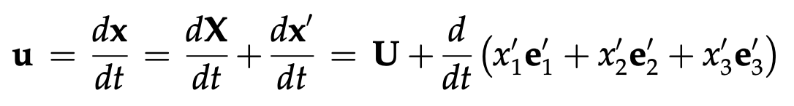
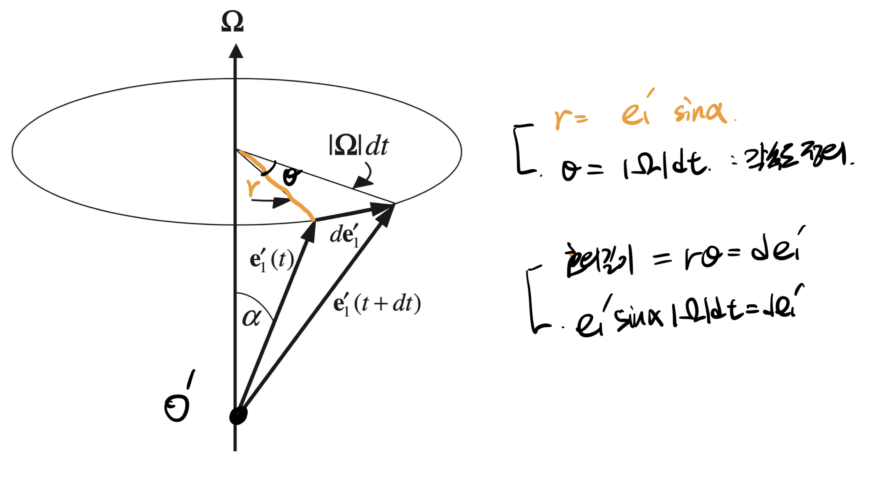
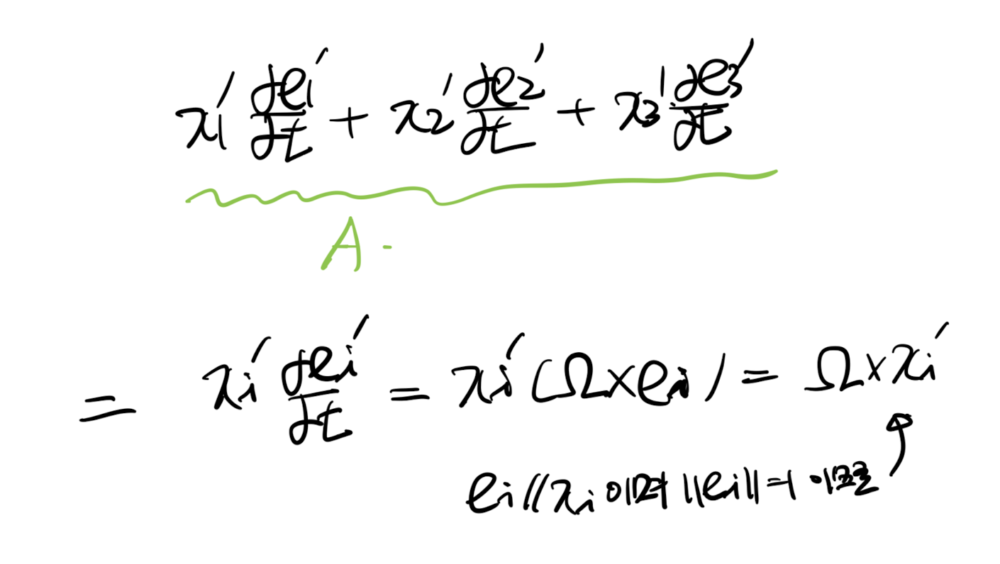
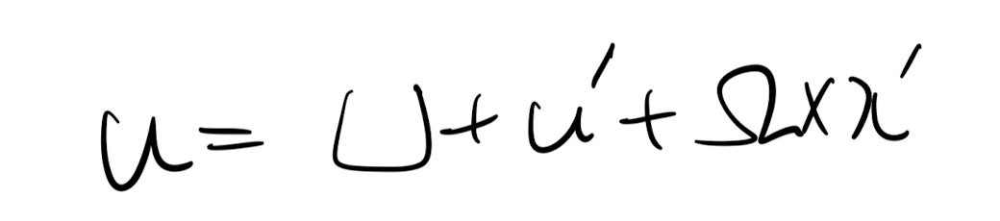

<!DOCTYPE html>
<html lang="ko" data-theme="dark">
<head>
  <meta charset="utf-8">
  <meta name="viewport" content="width=device-width, initial-scale=1">
  <title>Ch3 Vorticity dynamics_part3_Non inertial rotating reference frame | Sehyeog Kim</title>
  <link rel="stylesheet" href="../../../assets/css/style.css">
  <script>
    (function(){var t=localStorage.getItem('theme')||'dark';document.documentElement.setAttribute('data-theme',t)})();
  </script>
</head>
<body>
  <!-- Theme toggle -->
  <button class="theme-toggle" aria-label="Toggle theme">
    <svg class="icon-sun" viewBox="0 0 24 24" fill="none" stroke="currentColor" stroke-width="2" stroke-linecap="round" stroke-linejoin="round"><circle cx="12" cy="12" r="5"/><line x1="12" y1="1" x2="12" y2="3"/><line x1="12" y1="21" x2="12" y2="23"/><line x1="4.22" y1="4.22" x2="5.64" y2="5.64"/><line x1="18.36" y1="18.36" x2="19.78" y2="19.78"/><line x1="1" y1="12" x2="3" y2="12"/><line x1="21" y1="12" x2="23" y2="12"/><line x1="4.22" y1="19.78" x2="5.64" y2="18.36"/><line x1="18.36" y1="5.64" x2="19.78" y2="4.22"/></svg>
    <svg class="icon-moon" viewBox="0 0 24 24" fill="none" stroke="currentColor" stroke-width="2" stroke-linecap="round" stroke-linejoin="round"><path d="M21 12.79A9 9 0 1 1 11.21 3 7 7 0 0 0 21 12.79z"/></svg>
  </button>

  <!-- Mobile header -->
  <header class="mobile-header">
    <span class="site-title">Sehyeog Kim</span>
    <button class="menu-toggle" aria-label="Menu">&#9776;</button>
  </header>
  <div class="sidebar-overlay"></div>

  <div class="site-wrapper">
    <!-- Sidebar -->
    <aside class="sidebar">
      <div class="sidebar-bg">
        
      </div>
      <div class="sidebar-profile">
        
        <h1 class="profile-name">Sehyeog Kim</h1>
        <p class="profile-bio">AI &amp; Computational Engineering<br>Personal Blog</p>
        <div class="profile-links">
          <a href="https://github.com/Sehyeogkim" target="_blank" rel="noopener">
            <svg viewBox="0 0 16 16" width="16" height="16" fill="currentColor"><path d="M8 0C3.58 0 0 3.58 0 8c0 3.54 2.29 6.53 5.47 7.59.4.07.55-.17.55-.38 0-.19-.01-.82-.01-1.49-2.01.37-2.53-.49-2.69-.94-.09-.23-.48-.94-.82-1.13-.28-.15-.68-.52-.01-.53.63-.01 1.08.58 1.23.82.72 1.21 1.87.87 2.33.66.07-.52.28-.87.51-1.07-1.78-.2-3.64-.89-3.64-3.95 0-.87.31-1.59.82-2.15-.08-.2-.36-1.02.08-2.12 0 0 .67-.21 2.2.82.64-.18 1.32-.27 2-.27.68 0 1.36.09 2 .27 1.53-1.04 2.2-.82 2.2-.82.44 1.1.16 1.92.08 2.12.51.56.82 1.27.82 2.15 0 3.07-1.87 3.75-3.65 3.95.29.25.54.73.54 1.48 0 1.07-.01 1.93-.01 2.2 0 .21.15.46.55.38A8.013 8.013 0 0016 8c0-4.42-3.58-8-8-8z"/></svg> GitHub
          </a>
        </div>
      </div>
      <nav class="sidebar-nav">
        <a href="/" class="nav-item nav-home">Home</a>
        <span class="nav-label">Categories</span>
        <a href="/blog/agentic-ai/" class="nav-item">Agentic_AI<span class="nav-post-count">8</span></a>
        <a href="/blog/blood-flow-and-metabolism/" class="nav-item">Blood-Flow-and-Metabolism<span class="nav-post-count">12</span></a>
        <a href="/blog/cardiovascular-diseases/" class="nav-item">CardioVascular_Diseases<span class="nav-post-count">8</span></a>
        <a href="/blog/computational-linear-algebra/" class="nav-item">Computational-Linear-Algebra<span class="nav-post-count">15</span></a>
        <a href="/blog/computational-fluid-dynamics/" class="nav-item">Computational_Fluid_Dynamics<span class="nav-post-count">14</span></a>
        <a href="/blog/continuum-mechanics/" class="nav-item">Continuum-Mechanics<span class="nav-post-count">9</span></a>
        <a href="/blog/deep-learning/" class="nav-item">Deep-learning<span class="nav-post-count">14</span></a>
        <a href="/blog/engineering-mathematics/" class="nav-item">Engineering_Mathematics<span class="nav-post-count">14</span></a>
        <a href="/blog/finite-element-method/" class="nav-item">Finite-Element-Method<span class="nav-post-count">1</span></a>
        <a href="/blog/fluid-mechanics/" class="nav-item">Fluid_Mechanics<span class="nav-post-count">18</span></a>
        <a href="/blog/gas-dynamics/" class="nav-item">Gas_Dynamics<span class="nav-post-count">24</span></a>
        <a href="/blog/heat-transfer/" class="nav-item">Heat-transfer<span class="nav-post-count">8</span></a>
        <a href="/blog/machine-learning/" class="nav-item">Machine_Learning<span class="nav-post-count">11</span></a>
        <a href="/blog/sensitivity-analysis/" class="nav-item">Sensitivity_Analysis<span class="nav-post-count">3</span></a>
        <a href="/blog/solid-mechanics/" class="nav-item">Solid_Mechanics<span class="nav-post-count">25</span></a>
        <a href="/blog/thermodynamics/" class="nav-item">Thermodynamics<span class="nav-post-count">14</span></a>
        <a href="/blog/viscous-flow/" class="nav-item active">Viscous_Flow<span class="nav-post-count">28</span></a>
      </nav>
    </aside>

    <!-- Main content -->
    <main class="main-content">
      <div class="breadcrumb">  <a href="/">Home</a><span class="sep">/</span>  <a href="/blog/viscous-flow/">Viscous_Flow</a><span class="sep">/</span>  <span>Ch3 Vorticity dynamics_part3_Non inertial rotating reference frame</span></div>
<a href="/blog/viscous-flow/" class="back-link">&larr; Back to Viscous_Flow</a>
<div class="page-header"><h1>Ch3 Vorticity dynamics_part3_Non inertial rotating reference frame</h1></div>
<div class="post-meta"><span class="meta-item"><span class="meta-label">Date:</span> 2024-10-10</span><span class="meta-item"><span class="meta-label">Category:</span> Viscous_Flow</span><span class="meta-item"><span class="meta-label">Source:</span> <a href="https://jeffdissel.tistory.com/115" target="_blank" rel="noopener">link</a></span></div>
<article class="post-content"><p>지금까지 part1,2에서 구한<br />
Vorticity Equation<br />
은<br />
정지관성좌표계에서 유도한 방정식이다.<br />
즉, 밑의 그림을 보면<br />
점 O<br />
에서 1,2,3을 축으로<br />
fixed 되어있는 좌표계가 바로 [<br />
정지관성좌표계]<br />
이다.<br />
그리고, 그 옆에 움직이고 회전하는 O'이 바로<br />
[비관성좌표계]<br />
<br />
따라서, 지금까지 우리가 구한 Vorticity Eq은 O를 기준으로 유도되었고,<br />
이제 우리는 움직이고 있는 O'을 기준으로 vorticity Eq를 표현해볼 예정.<br />
(힌트: O'도 결국 O의 좌표계안에서 움직고 있다.)<br />
지금부터,<br />
O 기준시각 -&gt; 정지관성좌표계<br />
O'기준시각 -&gt; 비관성좌표계<br />
로 언급할것이다. 꼭꼭 햇갈리지 말자.<br />
먼저 속도부터 정의하자.<br />
비관성좌표계<br />
안에서 움직이고 있는 물체를 상상해보자.<br />
그 물체의 속도를<br />
!!!관성좌표계!!!<br />
에서 측정한 값을<br />
u라고 하자.<br />
u는 다음과 같이표현된다.(백터의 분해사용)<br />
<br />
U: 관성좌표계에서 측정한 비관성좌표계 자체의 속도.<br />
e1',e2',e3': 관성좌표계에서 측정한<br />
비관성좌표계의 기저벡터<br />
괄호안을 전개해주면 다음과 같고,<br />
<br />
u': 비관성좌표계에서 바라본 물체의 속도<br />
여기서 3번째항(A)를 구해보자.<br />
<br />
이해를 위해, 비관성좌표계안에서 생각해보자.<br />
호의길이를 이용해서 우리는 위의<br />
de1'과 각속도의 식을 유도가능하다.<br />
방향을 제외하고, 크기만 구해보면<br />
<br />
각속도와 e1'의 외적 크기 = de1'/dt의 크기<br />
임을 알 수 있다.<br />
이제 방향을 살펴보자.<br />
de1' 의 방향과 de1'/dt의 방향은 같고,<br />
de1'의 뱡항은 각속도, e1'과 모두 수직이다.<br />
따라서, 크기도 같고 방향도 같으므로<br />
<br />
기저들의 시간 미분 항을 각속도와 기저의 외적으로 바꿔주면<br />
A를 아래와 같이 구 할 수 있다.<br />
<br />
따라서, 우리는 u를 다음과 같이 나타낼 수 있다.<br />
<br />
각 항을 시간으로 미분하면 가속도를 구할 수 있다.<br />
<br />
햇갈리면 안되는 것이,<br />
a: 관성좌표계에서 바라본 물체의 가속도<br />
a': 비관성좌표계에서 바라본 물체의 가속도</p>
<h1>초록색항이 왜 저렇게 바뀌는 지는 아까전에 구했던 A를 이용하면,</h1>
<p>다음과 같이 증명가능하다.<br />
<br />
다시 본론으로 돌아와서, 가속도 term과<br />
각각의 physical meaning은 다음과 같다.<br />
<br />
편의상 뒷 항들을 B로 전환하자.<br />
<br />
그리고, 비관성좌표계 안에서의<br />
Incompressible flow, Navier's Stokes Eq으로 유체에 가해지는<br />
모멘텀 방정식은 다음과 같다.<br />
<br />
핵심적인 부분이 우항의 Body force 부분이<br />
관성좌표계와 비관성좌표계의 가속도차이인 B가 적용되었다는 점이다.<br />
여기서 아까 Coriolis 가속도로 인한 힘을<br />
코리올리 힘이라고 한다.<br />
이 힘이 적용된 사례가 바로 태풍이다.<br />
태풍은 저기압인 곳으로 공기가 이동하는데,<br />
<br />
Ω: 지구의 각속도<br />
u1: 바람의 초기속도<br />
u2: 바람의 나중속도<br />
우리가 구한 식에 의하면,<br />
- ΩX u1 방향이 바로 코리올리 힘의 방향으로 코리올리 힘을 받기 때문에,<br />
u1이 오른쪽으로 휘어 u2가 됨을 알 수 있다.<br />
따라서, 북반구에서 태풍은 반시계방향으로 회전하게 된다.</p></article>
      <footer class="site-footer">
        <p>&copy; 2026 Sehyeog Kim. Built with gitfolio-inspired theme.</p>
      </footer>
    </main>
  </div>

  <script src="../../../assets/js/main.js"></script>
</body>
</html>